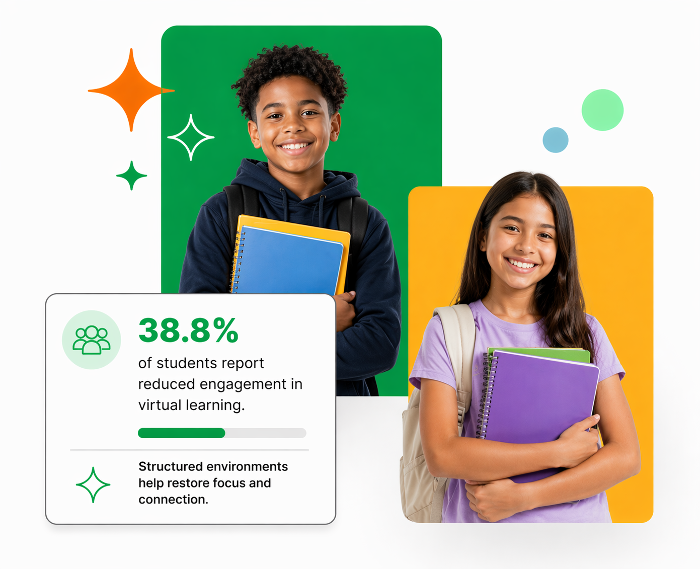

Why families trust us
- Small group environment
- Structured daily routine
- Academic support and accountability
- Safe, supervised setting
We provide a structured, supportive environment where virtual students can stay focused, accountable, and confident.
Join the Interest ListWe built S&S Learning Lab to support families navigating virtual education. Our focus is simple: structure, consistency, and real academic support.

Students stay on task and complete daily assignments.
Supervised, distraction-free learning space.
Real-time help and progress tracking.
Build friendships while learning.
Students arrive, settle in, and begin the day in a calm, supervised environment.
We help them transition into coursework smoothly so the school day starts with focus.
Students move through the day with clear expectations, check-ins, and steady follow-through.
Facilitators provide real-time help, encouragement, and progress support as needed.
Families finish the workday knowing their child’s school day was completed with structure and care.
Core program hours are 8:00 AM - 4:00 PM. We are exploring extended care options to support working families.